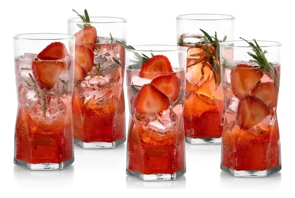

¿Vale la pena comprar una batidora de pedestal si no eres pastelero?

Es el sueño de cualquiera que vea programas de cocina o siga a influencers de repostería en Instagram: una hermosa batidora de pedestal adornando la barra de la cocina. Son estéticamente perfectas, vienen en colores preciosos y... son bastante caras. La pregunta que todos nos hacemos es: si solo hago pasteles de caja una vez al mes, ¿justifica su precio?
Nos dimos a la tarea de probar un modelo clásico de batidora de pedestal durante varias semanas. No solo intentamos hacer merengues complicados, sino que la usamos para tareas cotidianas para ver si realmente nos facilitaba la vida o si era solo un trofeo muy pesado.
La enorme diferencia de tener las "manos libres"
El argumento de que una batidora de mano de 20 dólares hace lo mismo que una de pedestal de cientos de dólares es técnicamente cierto para tareas ligeras (montar crema, batir huevos). El verdadero valor de la máquina de pedestal no es solo la fuerza del motor, sino la libertad.
Mientras la máquina bate claras a punto de nieve (un proceso que puede tomar 5-8 minutos), tus manos están libres para ir picando chocolate, pesando harina o engrasando el molde. Parece un detalle menor, pero cuando estás intentando seguir una receta compleja que requiere que añadas azúcar hirviendo "en forma de hilo" mientras bates a máxima velocidad, hacerlo con una batidora de mano es una tortura; con la de pedestal, es un paseo en el parque.
Descubre si este electrodoméstico es para ti. Mira su precio actual
Ver opciones y colores disponiblesEl terror de la masa para pan
Si alguna vez has intentado hacer masa madre, bases para pizza o pan casero a mano, sabes que el amasado es un ejercicio agotador que te deja con dolor de brazos. Aquí es donde la batidora de pedestal justifica cada centavo que pagaste por ella.
Equipada con el accesorio de "gancho" para amasar, la máquina convierte una bola pegajosa de agua y harina en una masa elástica y perfecta en unos 10 minutos. Es en estas preparaciones pesadas donde los motores de las batidoras manuales simplemente se queman y humean, mientras que el motor de transmisión de una de pedestal ni siquiera se despeina.
Los "Contras" que nadie te cuenta en Instagram
A pesar de lo mucho que nos gustó, hay realidades incómodas. Son increíblemente pesadas (algunas superan los 10 kg). Esto significa que no querrás estarla sacando y guardando de una alacena profunda cada vez que la uses; debe vivir permanentemente en tu barra de cocina, robándote espacio vital si tu cocina es pequeña.
Además, son terribles para cantidades pequeñas. Si intentas montar la clara de un solo huevo, el batidor globo ni siquiera llegará a tocar el fondo del tazón. Están diseñadas para lotes medianos a grandes de comida.
Nuestro Veredicto
Si la mayor parte de tu repostería consiste en hacer pasteles de caja (donde solo añades agua, huevo y aceite), por favor, ahorra tu dinero y compra una buena batidora de mano. La máquina de pedestal será un gasto innecesario que usarás como decoración.
Pero si horneas pan desde cero, si haces galletas desde la mantequilla y el azúcar (el proceso de acremado es mil veces mejor en estas máquinas), o si sueles preparar grandes cantidades de comida para reuniones familiares, es una inversión fabulosa que te ahorrará muchísimo esfuerzo físico y que, si la cuidas, te durará literalmente un par de décadas.